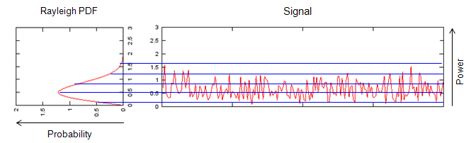

|
LTE Quick Reference Go Back To Index Home : www.sharetechnote.com |
|
|
Rayleigh Channel Model
Simple definition of Rayleigh Channel is a channel which shows Rayleigh distribution of power profile as shown below. (See Rayleigh Distribution section for mathematical definition of the distribution).

Just for your reference, I put down an example of Gaussian channel as shown below.
Why is this distribution important ? In wireless communication, it is important because this is very important modeling for faded channels in wireless communication. In most cases, the channels for reflected path is modeled in Rayleigh model as shown below.
Signal Generation for Rayleigh channel
There are a couple of ways to generate the signal for Rayleigh channel. The simplest way is as shown below and overall procedure is as follows. i) Generate a random signal with Guassian distribution ii) Generate another random signal with Guassian distribution iii) Combine the signal i) and ii) to make a complex signal. iv) Take the magnitude of the complex signal and the distribution of the magnitude value follows Rayleigh distribution.
Click here to download Matlab/Octave code for the plots shown above.
|